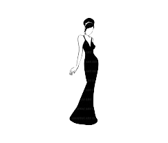

La alta costura

Este tipo de diseño de moda es la confección de ropa hecha a medida, utilizando telas y materiales de gran calidad para conseguir un resultado único e inimitable. La alta costura tiene un importante peso en el ámbito de la moda y las pasarelas puesto que marca las próximas tendencias y corrientes estilísticas al mismo tiempo que se encarga de vestir tanto a modelos como diferentes rostros de celebrities.Orígenes en París: La alta costura se originó en París en el siglo XIX, cuando la modista francesa Rose Bertin fue nombrada primera diseñadora de moda oficial de María Antonieta. Cosida a mano y a medida: La alta costura se refiere a la ropa hecha a medida que se cose a mano.